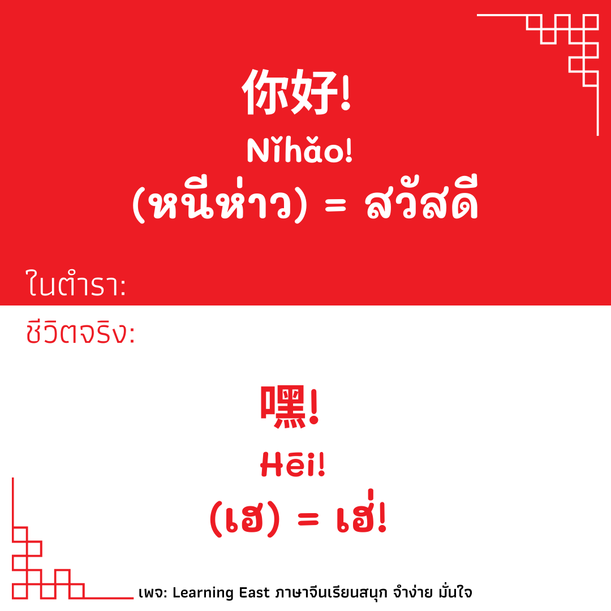
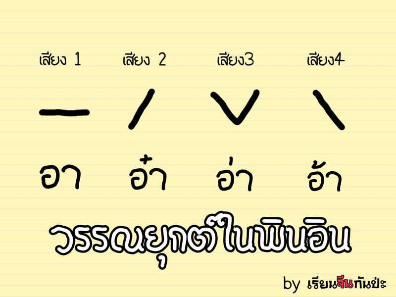
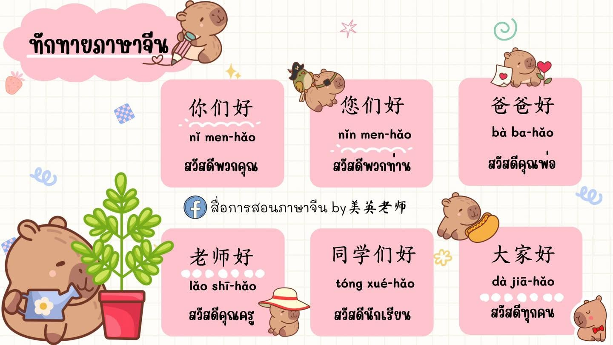
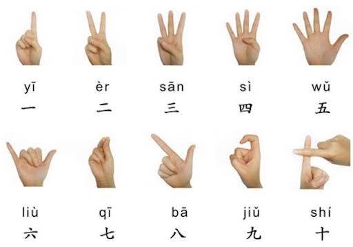

พื้นฐานภาษาจีน
ภาษาจีน 中文 (Zhōngwén)
ภาษาจีนเป็นภาษาที่มีผู้ใช้จำนวนมากทั่วโลก และมีความสำคัญต่อการสื่อสาร การศึกษา การค้า การท่องเที่ยว และการทำงาน
中文 (Zhōngwén) = ภาษาจีน
普通话 (Pǔtōnghuà) = ภาษาจีนกลางมาตรฐาน
สิ่งที่ควรเรียนรู้เบื้องต้น
ผู้เริ่มเรียนควรรู้จักตัวอักษรจีน พินอิน วรรณยุกต์ และคำศัพท์พื้นฐาน เพื่อพัฒนาการอ่าน การฟัง การพูด และการเขียน
ตัวอย่างคำศัพท์
你好 (Nǐ hǎo) = สวัสดี
谢谢 (Xièxie) = ขอบคุณ
再见 (Zàijiàn) = ลาก่อน

พินอิน (Pinyin)
พินอิน 拼音 (Pīnyīn)
“พินอิน” (拼音) คือ ระบบการเทียบเสียงในภาษาจีนกลาง (普通话) ที่ยืมตัวอักษรโรมันมาใช้ในการช่วยออกเสียงตัวอักษรจีน เพื่อให้ผู้เรียนภาษาจีนสามารถออกเสียงตัวอักษรจีนได้ง่ายขึ้น เนื่องจากอักษรจีนเป็นอักษรภาพ ไม่มีสระ และวรรณยุกต์ ทำให้การจำเสียงอ่านแต่ละตัวนั้นยากสำหรับผู้ที่เริ่มเรียน แม้กระทั่งคนจีนเองก็ต้องเริ่มเรียนภาษาจีนจากพินอินก่อนจะไปเรียนอักษรจีนด้วยเช่นกัน โดยพินอินจะอิงการออกเสียงจากภาษาจีนกลางเป็นมาตรฐานซึ่งแตกต่างไปจากการออกเสียงในภาษาอังกฤษ พินอินประกอบไปด้วย 3 ส่วน ที่ใช้ในการออกเสียง ดังนี้
เสียงพยัญชนะ มีทั้งหมด 23 เสียง
เสียงสระ มีทั้งหมด 36 เสียง
เสียงวรรณยุกต์ มีทั้งหมด 5 เสียง 4 รูป
องค์ประกอบของพินอิน
พยัญชนะต้น (声母 - Shēngmǔ): มีทั้งหมด 21 หรือ 23 เสียง (ตามวิธีนับ) เช่น b, p, m, f ทำหน้าที่เป็นเสียงพยัญชนะแรกของพยางค์
สระ (韵母 - Yùnmǔ): มีทั้งหมด 36 เสียง แบ่งเป็นสระเดี่ยว (เช่น a, o, e, i, u, ü) และสระผสม (เช่น ai, ao, an) ทำหน้าที่เป็นเสียงหลักของพยางค์
เสียงวรรณยุกต์ (声调 - Shēngdiào): มี 4 เสียงหลัก (เสียง 1 ¯, เสียง 2 ˊ, เสียง 3 ˇ, เสียง 4 ˋ) และเสียงเบาอีก 1 เสียง ช่วยกำหนดความหมายของคำ

วรรณยุกต์ภาษาจีน
วรรณยุกต์ 声调 (Shēngdiào)
ภาษาจีนกลางมีวรรณยุกต์หลัก 4 เสียง และเสียงเบา (轻声) การเปลี่ยนวรรณยุกต์อาจทำให้ความหมายของคำเปลี่ยนไป
เสียงที่ 1 จะเทียบได้กับเสียงสามัญในภาษาไทย
เสียงที่ 2 จะเทียบได้กับเสียงจัตวาในภาษาไทย
เสียงที่ 3 จะเทียบได้กับเสียงเอกในภาษาไทย
เสียงที่ 4 จะเทียบได้กับเสียงโทในภาษาไทย
เสียงเบา จะมีการออกเสียงคล้ายกับเสียงที่ 1 แต่ออกเพียงครึ่งเสียง หรือสั้นกว่า
เสียงที่ 1: mā 妈
เสียงที่ 2: má 麻
เสียงที่ 3: mǎ 马
เสียงที่ 4: mà 骂
การฝึกออกเสียงและฟังเจ้าของภาษาจะช่วยให้แยกความแตกต่างของวรรณยุกต์ได้ดีขึ้น

คำทักทายภาษาจีน
คำทักทาย 常用问候语
你好 (Nǐ hǎo) = สวัสดี
早上好 (Zǎoshang hǎo) = สวัสดีตอนเช้า
晚上好 (Wǎnshang hǎo) = สวัสดีตอนเย็น
再见 (Zàijiàn) = ลาก่อน
谢谢 (Xièxie) = ขอบคุณ
ตัวอย่างประโยค
你好！你好吗？
Nǐ hǎo! Nǐ hǎo ma?
แปลว่า “สวัสดี! คุณสบายดีไหม?”

ตัวเลขภาษาจีน
ตัวเลข 数字 (Shùzì)
一 (yī) = 1 二 (èr) = 2 三 (sān) = 3
四 (sì) = 4 五 (wǔ) = 5 六 (liù) = 6
七 (qī) = 7 八 (bā) = 8 九 (jiǔ) = 9
十 (shí) = 10
100: (yìbǎi) ร้อย
1,000:(qiān) พัน
10,000: (wàn) หมื่น
ตัวอย่าง
十二 (shí'èr) = 12
二十 (èrshí) = 20
二十五 (èrshíwǔ) = 25